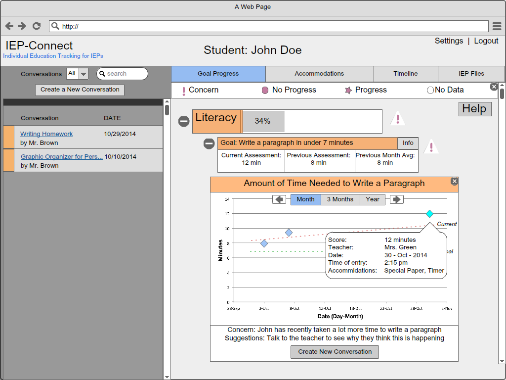

Step 1: Review Home page view of goal progress and all conversations

Step 2: Click on Literacy drop down, conversations filter based on what you are looking at

Step 3: Click on sub goal drop down to view the graph

Step 4: Click on data point to view the specifics of what was tracked 